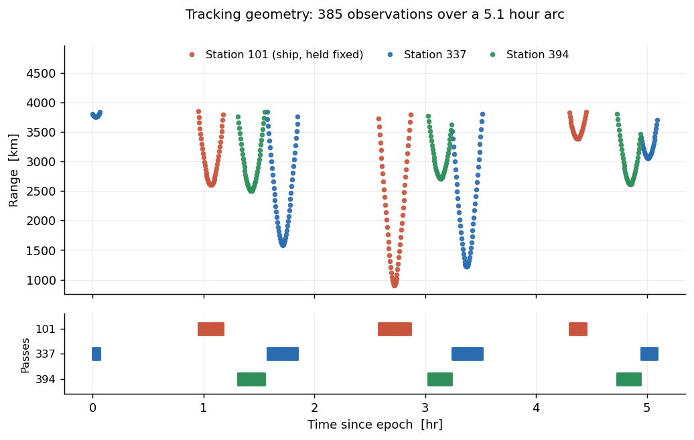
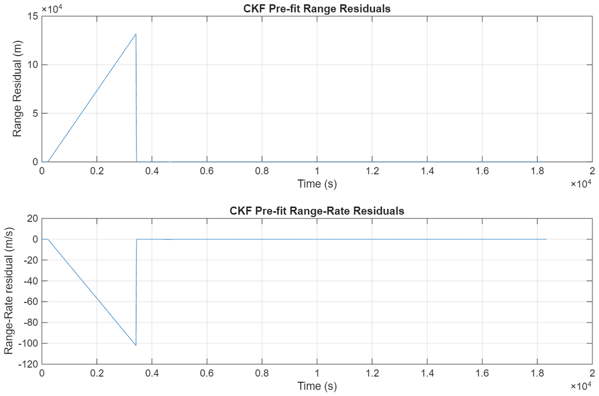
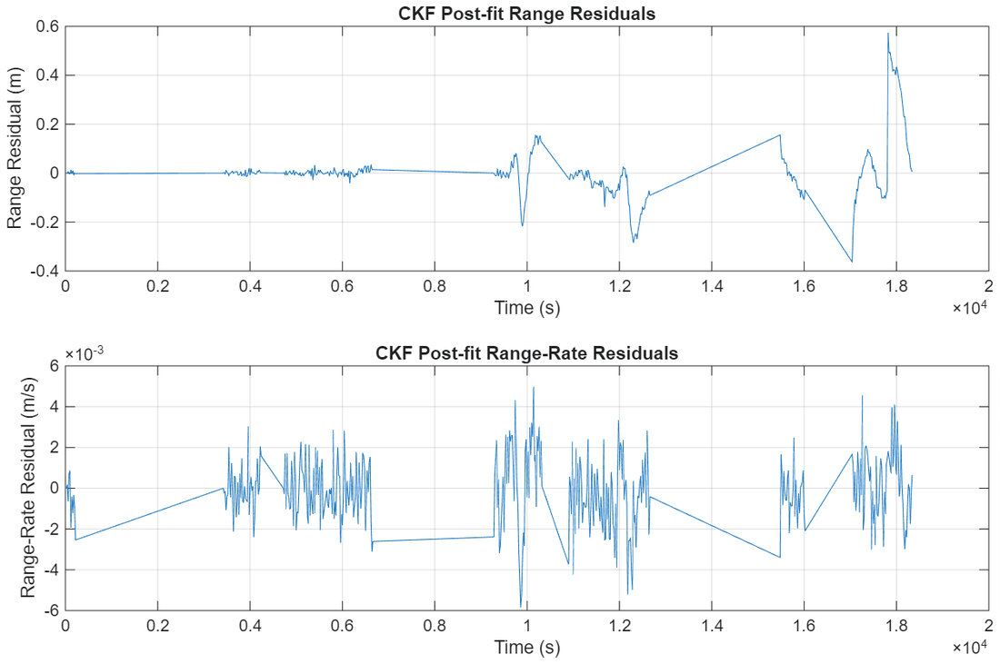
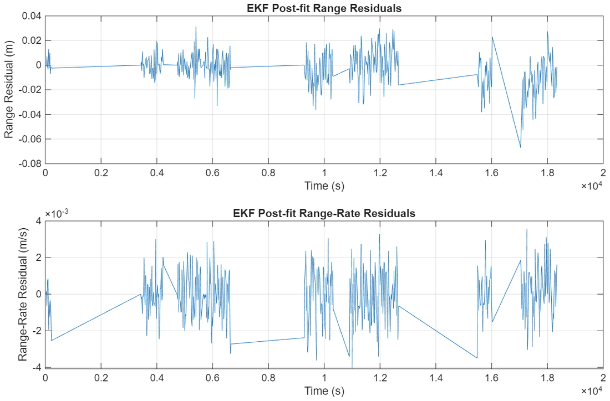
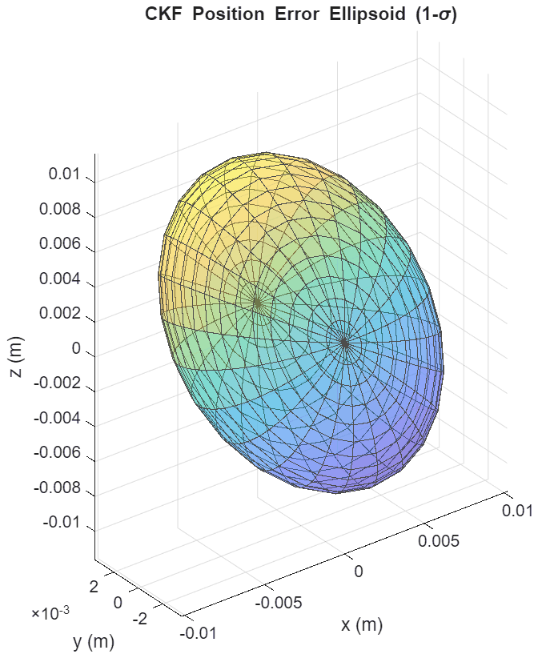
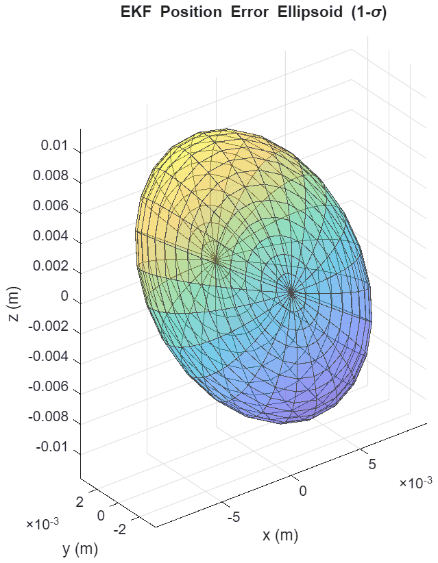
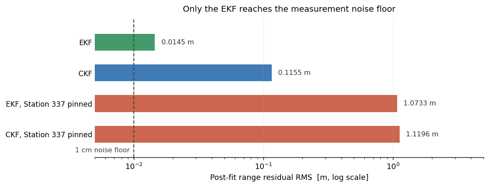

I built two sequential estimators, a Conventional Kalman Filter and an Extended Kalman Filter, to recover the trajectory of a satellite in a 700 km orbit from range and range-rate tracking alone. Both solve simultaneously for the vehicle state, the gravitational and drag parameters acting on it, and the positions of the tracking stations themselves.
The two filters share identical dynamics, measurement model, and observation set, so the only variable between them is when the problem gets relinearized. That isolates the cost of linearization error, which turns out to separate a solution sitting at the measurement noise floor from one sitting an order of magnitude above it.
The Estimation Problem
The estimated state is 18 elements: inertial position and velocity, the gravitational parameter μ, the J2 oblateness coefficient, the drag coefficient CD, and the body-fixed coordinates of three tracking stations. Estimating the stations matters, since a surveyed position off by centimetres biases every measurement that station produces, and a filter assuming those positions are perfect has nowhere to put that error except into the orbit.
Dynamics are two-body gravity with J2 and exponential-atmosphere drag, propagated at 1e-12 tolerance against 385 observations over a five-hour arc with 1 cm range and 1 mm/s range-rate noise. I derived the linearized dynamics matrix and observation Jacobian symbolically and emitted them to MATLAB, keeping the partials consistent with the propagator they differentiate.
Station 101 is deliberately held fixed. It is a ship in the Pacific, and with no model for current, heading, or sea state there is nothing to propagate its position with. Left free, its estimate would wander and its covariance would grow without bound.

Measured range by station, with the pass timeline below. Each station sees the vehicle for only a few minutes per revolution, so the solution is built from short, geometrically distinct arcs rather than continuous tracking.
Where the Two Filters Diverge
Both filters share the same time and measurement updates, differing only in what they linearize about. The CKF fixes a reference trajectory at the start and estimates a deviation from it for the entire arc, so as the truth drifts away the linear approximation degrades with no mechanism to recover. The EKF folds each correction back into the reference immediately and recomputes the state transition matrix and observation Jacobian about the updated point, so linearization error stops accumulating.
That introduces a failure mode of its own: relinearizing about a bad early estimate can diverge the filter. I resolved it with a 15-observation warm-up, running conventionally until the state correction settles before updating the reference, which eliminated the divergence entirely.
Reading the Residuals
Both filters open against the same 6.7 km range and 5.2 m/s range-rate initial error, visible in the pre-fit residuals. They separate on the post-fit side. Against a 1 cm noise floor, a converged filter should leave residuals of that size and no structure beyond it: the EKF lands at 1.45 cm while the CKF sits at 11.6 cm. What remains in the CKF residuals is not measurement noise but leftover linearization error the filter cannot remove.

Pre-fit residuals showing the ~6.7 km initial state error both filters start from.


Post-fit residuals, CKF (left) and EKF (right). Note the vertical scales differ by roughly an order of magnitude.
| Metric | CKF | EKF |
|---|---|---|
| Post-fit range RMS | 0.1155 m | 0.0145 m |
| Post-fit range-rate RMS | 0.001689 m/s | 0.001388 m/s |
| Position 1-σ x | 0.0102 m | 0.0098 m |
| Position 1-σ y | 0.0035 m | 0.0035 m |
| Position 1-σ z | 0.0117 m | 0.0116 m |
| Estimated CD | 2.1590 | 2.1979 |
Measurement noise: σρ = 0.01 m, σρ̇ = 0.001 m/s.
The recovered states agree closely and the reported uncertainties are nearly identical, at sub-centimetre level in every axis. Only the residuals separate them. Two filters can report the same covariance while only one has extracted everything the measurements contain, which is why post-fit residual structure is the check that matters.
Covariance Geometry


1-σ position-error ellipsoids from the final covariance, CKF (left) and EKF (right).
To make the final covariance interpretable, I took the eigendecomposition of its position block. The eigenvectors give the principal axes of the uncertainty and the square roots of the eigenvalues give the 1-σ extent along each, producing a direct geometric picture of what the tracking network constrains.
Both ellipsoids come out visibly non-spherical, pinched along y, which resolves to 3.5 mm while x and z sit near 1 cm. This is a station-geometry result rather than a filter result: from where these three stations sit, the measurement directions do not span the three axes evenly. A mission needing isotropic position knowledge would have to add a station or accept a directional error budget.
Using a Station Without Solving For It
To test whether a station's measurements can be used without carrying its coordinates in the solve, I re-ran both filters with Station 337 pinned to its surveyed position. The reported uncertainty improves, with position 1-σ tightening from [0.0098, 0.0035, 0.0116] m to [0.0024, 0.0023, 0.0046] m. Judged on covariance alone, that reads as a free win.
The residuals say otherwise. Post-fit range RMS jumps from 0.0145 m to 1.0733 m, seventy times worse and a hundred times above the noise floor, while the estimated drag coefficient slides from 2.198 to 1.252 absorbing a bias unrelated to drag. Pinning the station removed the filter's ability to attribute that station's error to the station, so the error redistributed into the remaining states while the covariance, no longer tracking it, shrank.
The filter became more confident and less correct at the same time, a compact demonstration of why a reported covariance is only trustworthy alongside a residual check.

Post-fit range residual RMS across all four runs. Pinning the station costs two orders of magnitude in residual fit while the reported uncertainty moves the other way.
Implementation
The estimators are a modular set of MATLAB scripts sharing one setup routine, one dynamics function, one observation model, and one Jacobian source. Drawing every filter from the same components keeps the comparison on the algorithm rather than on incidental configuration differences, and adding a variant such as a pinned station is a flag change rather than a forked file. A single entry point runs any combination of filters and writes each one's plots and converged numbers to its own output directory.